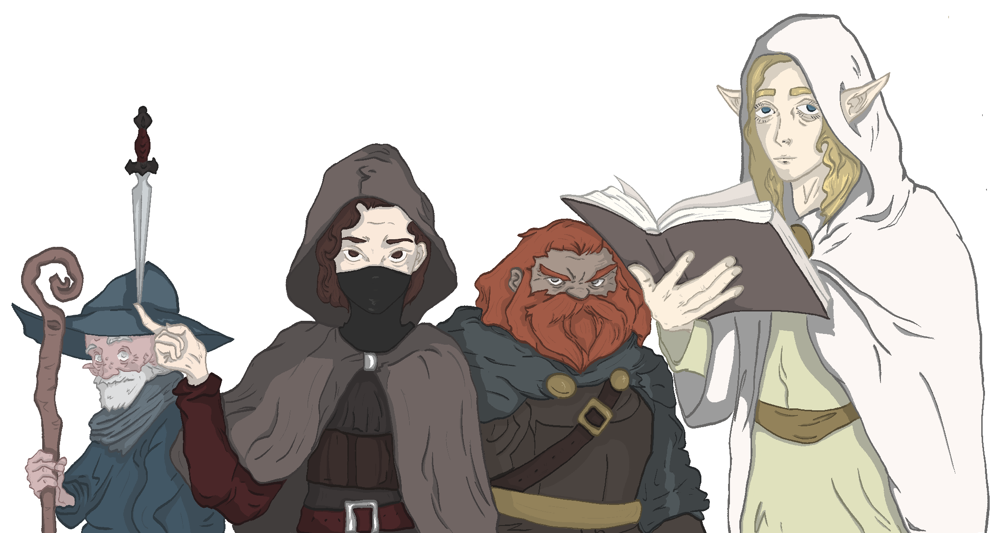
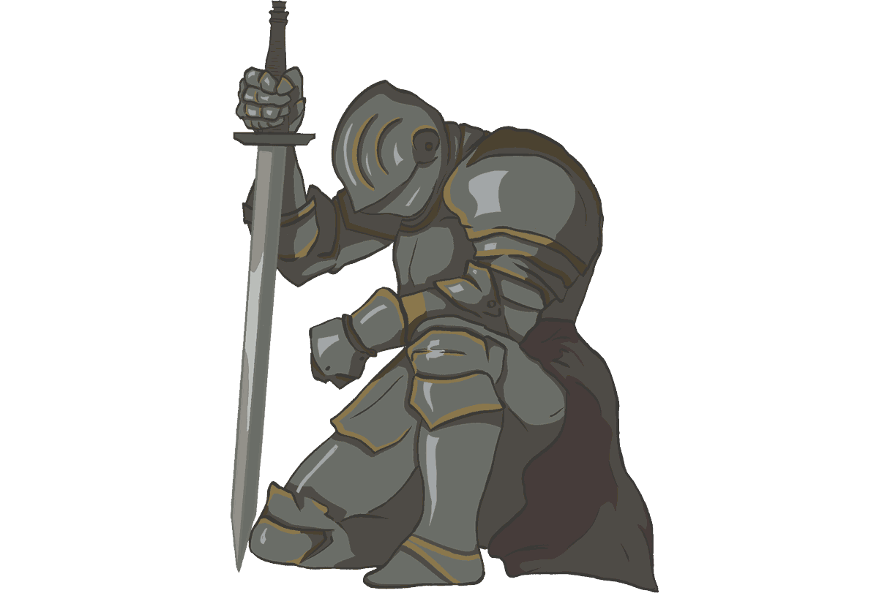
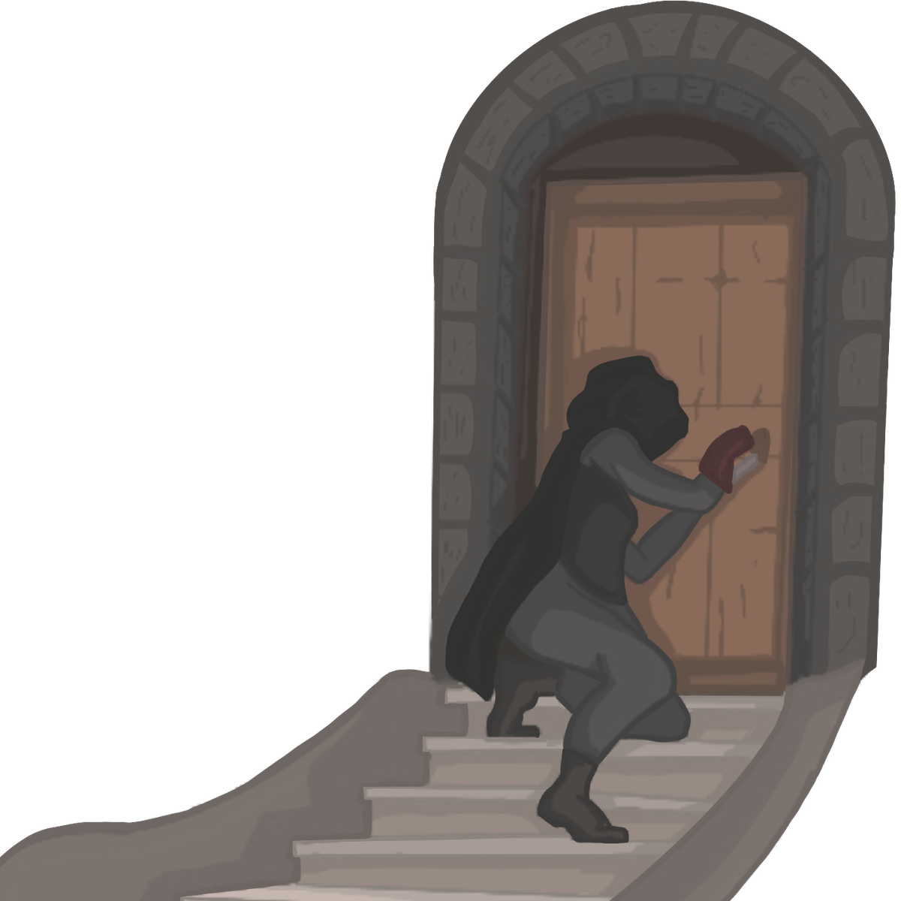

1Introduction
Tabletop roleplaying games, such as Old Gold, follow a simple game loop: the Referee (or yourself, if playing solo) sets a scene, players say or do what their characters would, and the dice settle whatever is uncertain.
Being a good Referee. You are a neutral arbiter. When a situation isn't covered by the rules, you make common-sense rulings. You let the story emerge from what the players do, and let the dice fall where they may. You are the eyes, ears, and nose of the players. You telegraph danger, and you reward clever thinking.
Being a good Player. You ask lots of questions, take notes, draw maps. You ask what you would do, not only what your character would. You plan and work with your party. You play to win, but you're ready to lose.
1.1What You Need
At least one polyhedral dice set (d4, d6, d8, d10, d12, d20), paper, pencil, and 50×15mm sticky notes to track your inventory. Download the character sheet on itch.io and join our Discord.
1.2Game Notations
A few shorthand terms are used throughout these rules:
- XdY. Roll X dice with Y sides and sum the results.
- PC. Player Character, an adventurer controlled by a player.
- NPC. Non-Player Character, anyone else in the world.
- Oracle. Random tables used to answer questions and generate unexpected outcomes.
1.3Modes of Play
You can undertake this journey alone or with friends.
- Solo play. You control the whole party and referee yourself, using oracles to answer questions and generate outcomes.
- Group play. Players control the party together, with no Referee, adjudicating rules and consulting oracles collectively.
- Guided play. One player serves as Referee, describing the world and NPCs and adjudicating the rules, while the others each control one or more PCs.
1.4Rounding
Always round up.
1.5Credits
Old Gold was designed by Milán László.
Illustrations by [Illustrator's Name].
Inspired by The Black Hack, Knave 2e and Mausritter.
Licensed under Creative Commons Attribution 4.0.
Special thanks to our playtesters: [Playtester Names].
2Time
| Scale | Duration | Used For |
|---|---|---|
| Round | 10 seconds | Combat, quick actions |
| Turn | 10 minutes | Dungeon delving, longer actions |
| Watch | 6 hours | Travel, rest, downtime |
6 rounds is a minute, 6 turns is an hour, 4 watches is a day. Weeks, months, years, and so on as needed. In combat, a round ends when every creature has acted.
3Character Creation
This chapter will walk you through creating an adventurer in just a few minutes.
3.1Ancestry
Choose your ancestry or roll 1d4.
1. Dwarf. Sturdy as the fortresses they carve, they are fiercely loyal and famous for their love of beer. Dwarves stand 120 cm tall and live 200 years, their bodies turning to stone, ore, and gems upon death. Advantage on checks to resist poison (including alcohol), and roll HP with advantage at character creation and when leveling up. Speed 8m. Speak Common and Dwarvish.
2. Elf. Quiet and strong-willed, Elves are drawn to old knowledge and the wilderness. They stand 200 cm tall and live up to 500 years, their bodies becoming seeds and green growth upon death. Advantage on checks to resist mental effects (such as Charm). Speed 12m. Speak Common and Sylvan.
3. Halfkin. Stubborn and warm-hearted, Halfkin prefer good food and a quiet life (though trouble finds them anyway). They stand 80 cm tall and live 100 years. They may reroll natural 1s on checks. Speed 8m. Speak Common.
4. Human. Restless and adaptable, Humans outnumber all other folk and thrive in every corner of the world. They stand 170 cm tall and live 70 years. Upon character creation, humans can either distribute 7 points or roll 7d4 (see Attributes). Speed 10m. Speak Common.

3.2Languages
You may start knowing one additional language if it fits your character. A new language can also be learned during downtime.
| Name | Description |
|---|---|
| Common | The shared tongue of most civilized folk. |
| Dwarvish | Deep and rhythmic, spoken by all who dwell beneath the mountains. |
| Sylvan | The oldest living language, whispered by elves, fey, and spirits. |
| Crude | Guttural and blunt, shared by orcs, goblins, giants, and trolls. |
| Draconic | The resonant tongue of dragons and lizardfolk. |
| Abyssal | Jagged and hissing, used by demons, undead, and dark rituals. |
| Celestial | Clear and ringing, spoken by angels and holy orders. |
| Thieves' Cant | A silent system of gestures and signs, shared by the underworld. |
3.3Attributes
Four attributes ranging from 0 to 9 measure your PC's strengths and weaknesses. Each attribute has a score and a bonus (half the score). Scores are used for checks and to calculate maximum HP, while bonuses are used for everything else (such as damage, range or magical effects).
| 1d4 | Attribute | Governs |
|---|---|---|
| 1 | Might | Strength, constitution, melee |
| 2 | Grace | Dexterity, initiative, ranged |
| 3 | Mind | Wits, knowledge, spellcasting |
| 4 | Heart | Charisma, perception, praying |
Either distribute 6 points among your attributes, or roll 6d4 on the table above, each die adding +1 to the attribute it rolls. No attribute may exceed 4 at character creation (reroll any die that would push it higher).
3.4Inspiration
When you do something exceptionally creative or courageous, something your character can be proud of, you become inspired. Spend your Inspiration to reroll any roll you make. Inspiration does not stack, and is lost after a rest.
3.5Health Points
HP represents your ability to endure harm. Your maximum HP starts at 6, plus 3 for each point of your Might score. At each level (including the first), roll 1d6 and add it to your maximum HP. Your HP cannot drop below 0.
Dying. While at 0 HP, you fall prone, unable to act, and must make a Death Roll each time you would act. NPCs usually die at 0 HP, and a creature that is unconscious or otherwise helpless can be slain instantly.
| 1d6 | Death Roll Outcome |
|---|---|
| 1 | You die. Describe your final moments. |
| 2–5 | Unconscious at 1 HP for 1d4 watches. |
| 6 | You recover to 1 HP and may act. |
Resting. To rest, spend a watch sleeping and consume a ration. A rest interrupted for more than an hour grants no benefit. A successful rest restores 1d6 HP, but you can only benefit from one rest per day. If you go a full day without resting, you have disadvantage on all rolls until you do.
Deprivation. Extended lack of food or water eventually requires Death Rolls at the start of each day. Extended lack of sleep gives a 1-in-6 chance of falling asleep for 1d4 watches at the start of each watch.
3.6Defense Points
DP represents armor, cover, and magical protection. Your base DP is 0. When you take damage from any source, subtract your DP. If any damage is left, apply it to your HP.
Cover. Partial cover grants +2 DP, while full cover blocks attacks entirely.
Direct damage. Some effects (freezing cold, mental damage, poison) ignore DP entirely.
3.7Inventory
PCs can carry equipment in 12 inventory slots, divided across three locations.
| Location | Slots | Access |
|---|---|---|
| Hands | 2 | Ready to use. |
| Body | 4 | Swap to hands as a free action. |
| Pack | 6 | Retrieve with an action. |
Most items take one slot, while bulky or heavy ones take two, and you cannot carry more than your slots hold. The character sheet's inventory slots are sized to fit sticky notes: write each item's name, dots, and effects on its own note, then move it between slots, hand it to another player, or set it aside as the fiction demands.
Depletion. Most items carry three usage dots. Mark a dot whenever you use an item in a way that might spend, damage, or wear it out. When the last dot is filled, the item is spent: broken, empty, or gone. Some items refill rather than break, for example a lantern clears its dots with lantern oil. How a dot is spent depends on the item:
- Gear & tools. Mark a dot when the fiction damages or uses it up, such as a rope cut short or a snapped lockpick.
- Light sources. Mark a dot for each period the light burns, as listed in Light Sources.
- Weapons, armor & shields. After each combat, there is a 1-in-6 chance to mark a dot. A blacksmith repairs each marked dot for 10% of the item's price.
- Throwing weapons. Each dot is one weapon, so a full slot holds three. Mark a dot as you throw one, then after combat there is a 5-in-6 chance to recover each, clearing the dot.
- Ammunition. Arrows, bolts, and sling stones are not tracked. Assume you carry enough.
- Consumables. Consumables are single-use unless noted, spent the moment you use them. Applying a poison coats one weapon strike or one drink (see Poison under Hazards). Rations are the exception, stacking three to a slot.
- Spellbooks & relics. Mark a dot when you cast a spell or invoke a prayer, then clear all dots on a successful rest. A relic has only one dot.
3.8Coinage
Gold Pieces (gp) are the standard currency used throughout the realm, and a day's unskilled labor pays 10 gp. The first 250 gp you carry takes no slots, but beyond that, each 250 gp requires a pouch (1 slot).
Selling. Merchants pay less for anything worn, damaged, or partly spent, roughly half for used goods and little or nothing for the badly worn. Valuables like gems or jewelry sell at full price in a city and half in a village, while bulky trade goods like silk or ore are the reverse.
Banking. In larger settlements, you can safely store gold and items, but retrieving them costs 1% of the stored value.
3.9Starting Equipment
Choose starting equipment: a weapon, plus a light or medium armor, spellbook, or relic. You also start with 20 + 2d20 gp, plus a waterskin, bedroll, flint & steel, and basic clothing (these take no slots). A Referee may adjust starting gear and wealth to fit a character's background. See Equipment for the full tables and prices.
3.10Advancement
You begin at level 1 with 0 XP and gain 1 XP for each gp spent on downtime activities, such as carousing at taverns, training with mentors, researching in libraries, donating to temples, or honoring dead party members. When you have enough XP, complete a successful rest to advance.
| Level | XP Required | Total XP |
|---|---|---|
| 1 | 0 | 0 |
| 2 | 1,000 | 1,000 |
| 3 | 2,000 | 3,000 |
| 4 | 4,000 | 7,000 |
| 5 | 8,000 | 15,000 |
| 6 | 16,000 | 31,000 |
| 7 | 32,000 | 63,000 |
| 8 | 64,000 | 127,000 |
| 9 | 128,000 | 255,000 |
| 10 | 256,000 | 511,000 |
Upon leveling up, increase an attribute of your choice by 1 (no attribute may exceed 9), and add a level's worth of HP as described in Health Points. If you raise Might, add 3 to your maximum HP as well.
Beyond level 10. You stop advancing at level 10. Gold that would have gone toward advancement can instead be spent on ships, strongholds, soldiers, and other lasting investments.
3.11Finishing Touches
Give your adventurer a fitting name or roll on the table below.
| 1d12 | Dwarf | Elf | Halfkin | Human |
|---|---|---|---|---|
| 1 | Járnda | Varenthas | Bramble | Garric |
| 2 | Vrannik | Celindyl | Sedge | Mara |
| 3 | Grudnir | Fendalus | Poppy | Eirik |
| 4 | Kelvor | Therylon | Nettle | Hegwin |
| 5 | Stennig | Nyveris | Thistle | Seren |
| 6 | Ongdur | Seralyn | Flint | Treven |
| 7 | Feldar | Maeraphon | Tansy | Connig |
| 8 | Hegril | Evrandir | Moss | Aldwen |
| 9 | Dáli | Aelinor | Mallow | Haldric |
| 10 | Brúni | Galrion | Rue | Brynn |
| 11 | Midrik | Yphera | Sorrel | Wynna |
| 12 | Andveg | Abrion | Clover | Drystan |
Roll or choose an appearance and personality or invent your own.
| 1d20 | Appearance | Personality |
|---|---|---|
| 1 | Built like an ox | Never breaks a promise |
| 2 | Shaved head | Laughs at danger |
| 3 | Crooked nose | Suspicious of strangers |
| 4 | Missing ear | Speaks too loudly |
| 5 | Wild hair | Quietly generous |
| 6 | Mismatched eyes | Holds grudges forever |
| 7 | Burn-scarred face | Has to win every argument |
| 8 | Gold tooth | Superstitiously cautious |
| 9 | Weather-beaten | Relentlessly cheerful |
| 10 | Lean as a whip | Cold and calculating |
| 11 | Faded tattoo | Fiercely loyal |
| 12 | Heavily scarred | Compulsive liar |
| 13 | Hoarse voice | Talks to themselves |
| 14 | Freckled | Burns hot, cools fast |
| 15 | Pale as candle wax | Overly polite |
| 16 | Tall and stooped | Painfully honest |
| 17 | Smells of smoke | Flamboyant |
| 18 | Unworked hands | Ambitious |
| 19 | Easily overlooked | Says very little |
| 20 | Strikingly beautiful | Cowardly but clever |
Roll or choose a background and motivation or invent your own.
| 1d20 | Background | Motivation |
|---|---|---|
| 1 | Soldier | Pay off debt |
| 2 | Herbalist | Find someone |
| 3 | Pickpocket | Avenge something |
| 4 | Sailor | Prove a doubter wrong |
| 5 | Merchant | Earn enough to retire |
| 6 | Blacksmith | Outrun a curse |
| 7 | Charlatan | Learn what others fear to know |
| 8 | Hunter | Fulfill a vow |
| 9 | Tax collector | Recover something |
| 10 | Scribe | Wander for its own sake |
| 11 | Deserter | Greed, pure and simple |
| 12 | Spy | Nothing waits for you at home |
| 13 | Barber-surgeon | Test your faith |
| 14 | Pit fighter | Find a place worth staying |
| 15 | Smuggler | Look for a worthy death |
| 16 | Cultist | Discover the truth |
| 17 | Troubadour | Earn back your honor |
| 18 | Grave robber | Map the unmapped |
| 19 | Hedge witch | Protect what others won't |
| 20 | Disgraced noble | Stop running from yourself |
3.12Bonds
You share a bond with each player sitting next to you (or pair characters in solo play). Together, invent a bond that fits, or both players roll 1d6 and add the results to consult the table below.
| 2d6 | Bond |
|---|---|
| 2 | Family by blood |
| 3 | Former lovers, or a romance that never resolved |
| 4 | Mentor and student, or old friends who grew up together |
| 5 | One owes the other a debt |
| 6 | Rivals who respect each other more than either will admit |
| 7 | Traveling companions who simply kept moving together |
| 8 | Bonded over drink, game, or a shared habit |
| 9 | Bound to the same third person |
| 10 | Both survived something that should have killed them |
| 11 | Distrust each other, but circumstances made them allies |
| 12 | Bound by a secret neither can afford to have revealed |
4Equipment
4.1Light Sources
| Item | Description | gp |
|---|---|---|
| Candle | 1 slot, 6m light. Mark every hour. | 1 |
| Torch | 1 slot, 10m light. Mark every hour. | 5 |
| Lantern | 1 slot, 10m light. Mark every watch. Refill with Lantern Oil. | 50 |
| Lantern Oil | 1 slot. Throw to ignite (3 rounds, 2m). | 5 |
| Sunstone | 1 slot, 6m light. Mark every hour. Refill with sunlight. | 100 |
4.2Weapons & Armor
When used, weapons and shields occupy hand slots and armor occupies body slots.
| Weapon | Description | gp |
|---|---|---|
| Melee | 1 slot, 1d6 + Might Bonus, 2m. | 50 |
| Finesse | 1 slot, 1d6 + Grace Bonus, 2m. | 50 |
| Versatile | 1 slot, 1d6 + Might Bonus, or 2 slots, 1d8 + Might Bonus, 2m. | 100 |
| Heavy | 2 slots, 1d10 + Might Bonus, 2m. | 200 |
| Reach | 1 slot, 1d4 + Might Bonus, 4m. | 50 |
| Heavy Reach | 2 slots, 1d6 + Might Bonus, 4m. | 100 |
| Throwing | 1 slot, 1d4 + Might Bonus, Might Bonus × 6m (min 2m). | 50 |
| Ranged | 1 slot, 1d4 + Grace Bonus, 20m. | 50 |
| Heavy Ranged | 2 slots, 1d6 + Grace Bonus, 60m. | 100 |
| Armor | Description | gp |
|---|---|---|
| Shield | 1 slot, +1 DP. | 50 |
| Light | 1 slot, +1 DP. | 50 |
| Medium | 2 slots, +2 DP. | 200 |
| Heavy | 3 slots, +3 DP. | 500 |
Silvered equipment. Costs double the base price and deals 1 less damage. A silvered weapon counts as non-mundane, letting it harm creatures that shrug off ordinary steel.
Masterwork equipment. Costs 10 times the base price. A masterwork weapon deals +1 damage, and masterwork armor grants +1 DP.
Magic items. Rarer still, some gear has a spell or prayer bound into it. The effect is always active in some and invoked in others (spends usage dots like the spellbook or relic it draws on, refilling on a rest). A magic item cannot be crafted, only found, taken, or bargained for, and since it cannot be damaged or destroyed by mundane means, it never suffers wear.
- Flaming blade. A melee weapon that, on command, wreathes itself in fire for an hour, shedding light in a 4m radius and adding 1d4 damage to every strike. It marks one of its three dots each time it is lit.
- Sharkskin mail. Medium armor whose scaled links let you swim at your full Speed and breathe water as freely as air. The gift is always active and spends no dots.
- Shadow lantern. A lantern with a single dot. Once lit, it burns for an hour, and within its glow shadows replay the events of the past day as silent silhouettes.
4.3Consumables
| Item | Description | gp |
|---|---|---|
| Rations | 1 slot. Required to rest. | 5 |
| Holy water | 1 slot. Throw at undead or fiends to deal 1d6 direct damage. | 25 |
| Antitoxin | 1 slot. Retry a failed check against an active poison, or gain advantage on the next poison check. | 30 |
| Healing potion | 1 slot. Restores 1d6+1 HP. | 50 |
| Greater healing potion | 1 slot. Restores 2d6+2 HP. | 200 |
| Weakening poison | 1 slot. Disadvantage on Might and Grace rolls for 1d4 watches or until cured. | 200 |
| Sleep poison | 1 slot. Asleep for 1d4 watches. Damage or shaking may wake the victim. | 300 |
| Paralytic poison | 1 slot. Paralyzed for 1d6 hours. | 400 |
| Lethal poison | 1 slot. 1d6 direct damage now and each time the victim would act for the next 6 rounds. | 500 |
4.4Adventuring Gear
| Item | Description | gp |
|---|---|---|
| Rope | 1 slot, 20m. | 10 |
| Grappling hook | 1 slot. | 25 |
| Lockpicks | 1 slot, 3 dots. Pick a lock with a Grace check, marking a dot each time you fail. | 50 |
| Collapsible pole | 1 slot, 4m. | 5 |
| Mirror | 1 slot. | 10 |
| Caltrops | 1 slot, 2m radius. Creatures crossing take 1d4 damage and halve Speed. | 15 |
| Hunting trap | 1 slot. 1d6 damage and restrains the target. Advantage when foraging. | 30 |
| Manacles | 1 slot. | 20 |
| Net | 1 slot. Throw to restrain the target. | 20 |
| Spyglass | 1 slot. See clearly at a long distance. | 100 |
| Hourglass | 1 slot. Measures time. | 25 |
| Healer's kit | 1 slot, 3 dots. Restores 1d3 + Heart Bonus HP. Advantage on your next rest's HP roll. | 50 |
| Disguise kit | 1 slot, 3 dots. Heart check to pass as another person. | 100 |
| Sack | 1 slot. Carries small items together. | 1 |
| Pouch | 1 slot. Holds 250 gp. | 1 |
4.5Valuables & Trade Goods
Example worths for treasure a party finds and sells. A sackful of valuables fills one slot, while trade goods are bulky, taking two slots each.
| gp | Valuables | Trade goods |
|---|---|---|
| 50 | Silver goblet, ivory comb, illuminated page | Bolt of fine cloth, keg of dye |
| 100 | Pearl, gold bracelet, silver-inlaid dagger | Cask of aged wine, crate of tea bricks |
| 250 | Gold necklace, garnet, master's small painting | Bale of furs, barrel of whale oil |
| 500 | Emerald, golden chalice, ancient funeral mask | Chest of spices, roll of silk |
| 1,000 | Jeweled crown, diamond, solid-gold idol | Silver ingots, chest of rare incense |
4.6Spellbooks & Relics
| Item | Description | gp |
|---|---|---|
| Spellbook | 1 slot, 3 dots. Contains a single spell. | 50–5,000 |
| Relic | 1 slot, 1 dot. Holy object granting access to a deity's prayers. | 50–5,000 |
5Challenges
When the outcome of an action is uncertain, make a check: roll 1d20 and add your relevant attribute score. You succeed if the total exceeds the difficulty and you fail on equal or lower. Only call for a check when the result is genuinely uncertain and failure or success has meaningful or interesting consequences.
Difficulty. When acting against another creature, difficulty equals 10 plus their relevant attribute score. Otherwise, set difficulty by the task itself.
| Task | Difficulty |
|---|---|
| Easy | 7 |
| Normal | 10 |
| Troublesome | 13 |
| Difficult | 16 |
| Brutal | 19 |
Player-facing rolls. Whenever a PC is involved, the player should make the check from their character's point of view.
Critical rolls. A natural 20 always produces the best possible outcome given the circumstances. A natural 1 always fails, and badly.
Advantage & disadvantage. When you have advantage, roll twice and take the higher result. Conversely, when you have disadvantage, roll twice and take the lower one. These effects can apply to any roll (a check, a damage roll, even a death roll). They do not stack and cancel each other out.
Helping. When an ally can meaningfully contribute to your task, you make the check with advantage.
Group challenges. When multiple adventurers face the same challenge (sneaking past guards, crossing a river), each rolls individually and the group succeeds if at least half succeed.
Retrying. You cannot retry a failed check unless circumstances change (new tools, new information, a different approach, or enough time) or you're willing to pay the price (mark usage, raise the difficulty, take damage, or accept a narrative consequence).
6Actions
When the sequence of actions matters, the game shifts into rounds. Each round, every creature may move, take a main action, and perform a reasonable number of free actions. Rounds are used for combat, but also for chases, collapsing tunnels, tense negotiations, or any other situation where seconds count.
6.1Initiative
Creatures act in order of their Grace, highest first. PCs act before NPCs when tied. If multiple PCs share the same Grace, they decide among themselves.
Surprise. A successful ambush requires preparation and an appropriate check (for example, Grace to spring a trap unseen, or Heart to notice one coming). As always, the player rolls whenever a PC is involved. Surprised creatures cannot act during the first round.
6.2Movement
You may move up to your Speed per round. Difficult terrain (dense brush, rubble, water) halves your Speed. Jumping, climbing, swimming, and similar feats are part of your move action, but may require a check.
6.3Main Actions
Your main action is one complex interaction, such as attacking, casting a spell, praying, or making an ability check. You can also:
- Sprint. Move up to your Speed again.
- Defend. Roll 1d4 and gain that much DP until you would act again.
- Disengage. Move without provoking opportunity attacks.
6.4Free Actions
Drawing a weapon, drinking a potion, flipping a lever, shouting a warning. Anything brief and simple within the bounds of what's realistically possible in a single moment.
7Combat
In Old Gold you only need to roll for damage. Use your weapon's damage die, add the attribute bonus your weapon uses (usually Might for melee, Grace for ranged), and subtract the target's DP (which is higher if they used the defend action).

Combat maneuvers. Instead of attacking, you can attempt to disarm, shove, trip, grapple, blind, or otherwise hinder an opponent. Resolve these with an appropriate check.
Opportunity attacks. When a creature leaves your melee reach, you may immediately attack them as a free action. You can only make one opportunity attack per round.
Unarmed & improvised. Fists deal 1d2 + Might Bonus damage. Bottles, chair legs, rocks: 1d4 + Might Bonus damage.
Ranged attacks. Ranged and throwing weapons cannot target creatures beyond their listed range, or creatures within melee reach. When shooting into melee, there is a 1-in-6 chance your shot strikes a random ally in the melee instead of your intended target.
Dual-wielding. Roll with both weapons then keep the higher result.
7.1Conditions
Effects and maneuvers can impose the conditions below. A condition lasts until the encounter ends, the effect's stated duration runs out, or a reasonable action clears it. Beyond their mechanics, conditions should shape the fiction.
- Blinded. Roll damage and any sight-based check with disadvantage.
- Prone. You move only by crawling at half Speed, and standing up uses your move. Attackers in melee roll damage against you with advantage, while attackers at range roll with disadvantage.
- Grappled. Your Speed is 0. You may still act, and may break free by spending an action on a check.
- Restrained. Your Speed is 0, and you roll damage and Grace checks with disadvantage. Escaping takes an action and a check.
- Paralyzed / Stunned. You cannot move, act, or speak.
- Petrified. As paralyzed, but turned to stone and unaware, lasting until cured.
- Unconscious. You fall prone and cannot act. Unlike sleep, a shout or shake will not rouse you.
- Charmed. You treat the source as a trusted friend and will not knowingly harm them.
- Frightened. While the source of your fear remains in sight, you cannot willingly move toward it, and you roll damage against it with disadvantage.
7.2Morale
At a breaking point (first casualty, half their number dead, leader slain, facing something terrifying) NPCs must check morale. Roll 2d6, and if the result exceeds their morale score, they flee, surrender, or retreat.
8Magic
PCs can wield magic through arcane spellbooks or divine relics, rare items that cannot be copied or created, only purchased, discovered, or taken. Their price is always bargained for, depending on the power and rarity of the spell or prayer.
8.1Casting
Both spells and prayers require a main action, the spellbook or relic in hand, and the ability to speak. Mark a usage dot when you cast, and clear all dots after a successful rest.
Defaults. Unless stated otherwise, spells and prayers last 1 round and have a range of 60 meters. An item is anything that fits in one hand. An object is anything up to human-sized.
Innate abilities. Some creatures produce magical effects naturally. These follow the same rules as spells or prayers but use no usage dots. Instead, once used, there is a 2-in-6 chance the creature recharges the ability the next time it would act.
Your table, your magic. The spells and prayers below are starting points. Modify them, write your own, or adapt from other systems. Just remember: any spell or prayer you introduce, your enemies can use too.
8.2Example Spellbooks
A spellbook contains a single specific spell. It occupies 1 inventory slot and has 3 usage dots that refill on a rest.
- Charm. Make a Mind check against each of up to Mind Bonus humanoids within range. Each you beat is charmed for 1 hour, and may realize they were influenced when it ends.
- Sleep. Make a Mind check against each of up to Mind Bonus creatures within range. Each target you beat falls asleep for 1 hour. Loud noise or a shake wakes them.
- Petrify. Make a Mind check against a creature within range that can see you. It resists with Grace, averting its eyes. If you beat it, the creature is petrified.
- Counterspell. When a creature you can see casts a spell within range, you may cast this immediately as a free action. Make a Mind check to end their spell.
- Detect magic. You sense magical auras within range by focusing for a few minutes. With a Mind check, you can also learn an aura's nature and function.
- Fly. A willing creature can fly at their Speed for Mind Bonus minutes.
- Invisibility. A willing creature becomes invisible for Mind Bonus turns, or until they take a main action or suffer damage. While invisible, attackers who cannot locate them roll damage against them with disadvantage, and their own attacks roll damage with advantage.
- Mirror image. Two illusory duplicates of yourself shimmer into being, which you control telepathically. Each vanishes when it takes any damage, leaves your line of sight, or after 1 watch.
- Magic missile. Bolts of pale fire streak from your hand, striking up to Mind Bonus targets (or the same target multiple times) for 1d4 direct damage each.
- Fireball. A roaring sphere of flame erupts at a point you can see within range. All creatures within 8 meters take 2d6 + Mind Bonus damage.
- Elemental wall. Conjure a wall of fire or ice up to 30 meters long, 2 meters wide, and 4 meters tall, lasting Mind Bonus rounds. Creatures passing through a fire wall take 1d8 damage. An ice wall blocks line of sight and has 10 HP.
- Web. Sticky, flammable strands fill a 6-meter cube, lasting until burned or destroyed. Creatures inside are restrained.
- Telekinesis. You grip one object with your mind and move it up to 6 meters per round for Mind Bonus rounds. Manipulating something held or worn by an unwilling creature requires a Mind check.
- Mirrorwalk. A mirror you touch becomes a two-way gate to another mirror you have touched today. The gate lasts a day.
- Message. Send a message of up to Mind Bonus × 10 words to a creature you have met. The message arrives instantly regardless of distance.
- Golem. A Stone Golem rises from the ground and obeys your commands for Mind Bonus hours, then stands inert.
8.3Example Relics
Holy objects tied to a specific deity. A relic occupies 1 inventory slot and has 1 usage dot that refills on a rest, but grants access to all prayers your deity permits. Acting against that nature, such as a priest of light wielding dark magic, risks the deity's displeasure.
- Commune. Ask your deity a question. The answer, if there is one, comes in Heart Bonus × 2 words or fewer.
- Aura of courage. Allies who can see or hear you add your Heart Bonus to their morale scores and have advantage on checks to resist fear for a day.
- Smite. Declared as part of a melee attack. Add 1d8 + Heart Bonus damage to your strike, or 2d8 + Heart Bonus against undead and fiends.
- Lay on hands. A creature you touch regains 1d6 + Heart Bonus HP.
- Purify. Cure one creature of poison, disease, or mundane affliction. Curing a magical affliction requires a Heart check.
- Light. Holy light radiates from you in a Heart Bonus × 4 meter radius for an hour. Undead and fiends within the light must check morale.
- Truth sense. For Heart Bonus hours, you instinctively know when a creature speaks a deliberate lie.
- Ward. A silver circle 8 meters across appears on the ground around you. Until you leave the circle, Heart Bonus things you name at casting cannot cross it.
- Bless. Up to Heart Bonus allies who can hear you each gain advantage on one roll of their choice before the encounter ends.
- Speak with animals. You may speak with and understand beasts for 1 watch. They react as NPCs and are not compelled to cooperate.
- Wild shape. You transform into a beast you have seen for Heart Bonus hours. You use the beast's HP, Might, Grace, and Speed, but keep your Mind and Heart. You cannot cast or use equipment in this form. Reduced to 0 HP, you return to your true form, unconscious, at 1 HP.
- Lightning. A bolt of lightning cuts a line 10 meters long and 2 meters wide. All creatures in its path take 2d8 + Heart Bonus damage.
- Drain. Touch a creature to deal 1d6 + Heart Bonus direct damage. You regain HP equal to the damage dealt.
- Hex. Make a Heart check against a creature within range. If you beat it, for Heart Bonus minutes they have disadvantage on checks involving an attribute you name.
- Speak with dead. The spirit of a corpse you touch manifests and answers Heart Bonus questions honestly.
9Hazards & Weather Effects
Not every danger swings a sword.
- Rain. Heavy rain reduces visibility, drowns out sound, slows movement, and turns ground to mud. Prolonged rain may cause flooding.
- Lightning. 2d10 damage. Nearby animals become Frightened and flammable materials ignite.
- Snow. Reduces visibility and slows movement. Heavy snow disorients and counts as difficult terrain.
- Extreme cold. Without proper gear, suffer 1d6 direct damage every watch. Resting gives no benefit without fire and shelter.
- Fog. Reduces visibility and disorients. Navigation checks are required even in familiar terrain.
- Wind. Halves the range of ranged and thrown weapons. Strong wind drowns out sound, slows movement, and may blow over unsecured objects. Carries scents.
- Storm. Combines rain, wind, and lightning at their worst.
- Extreme heat. Without water and shade, suffer 1d3 direct damage each watch, and resting consumes an extra ration.
- Burning. Fire deals 2d6 damage. A creature that is on fire takes this damage each time it would act until the flames are extinguished. Drop and roll (main action) to extinguish.
- Falling. 1d4 damage every 2m fallen beyond the first 2. If three or more dice show their max value, you die on impact.
- Suffocating. Hold breath for 6 + Might Bonus rounds. After that, fall unconscious and suffer 2d6 direct damage each time you would act.
- Intoxication. Might check after heavy drinking. Failure gives disadvantage on all rolls for one watch. Fail by 5 or more and you fall unconscious for 1d4 watches instead.
- Poison. When exposed, make a Might check to resist, or suffer its effects. Mark usage to coat one weapon strike or one drink.
10Overland Travel
Old Gold's overland play happens on a hex map where each hex is 10 km across. The map can be the Referee's, drawn from a published setting, or generated however your table prefers.
Crossing a hex takes a watch and reveals what's on the surface: terrain, roads, landmarks, settlements, and anything that isn't trying to hide. Roads let you cross 2 hexes per watch, or 1 hex per watch through difficult terrain. Difficult terrain (mountains, swamps, dense forest) otherwise takes 2 watches to cross. Some terrain features (rivers, cliffs, mountain spines) are dangerous to cross and might require appropriate checks.
When traveling through untamed lands, consult the Travel Oracle once per watch.
| 2d6 | Travel Oracle |
|---|---|
| 2–3 | Danger reveals itself: an encounter, hazard, or event. |
| 4–10 | Nothing eventful. |
| 11–12 | Opportunity reveals itself: an encounter, landmark, or event. |
Weather. Roll 2d6 when you set out, then envision the weather fitting the climate and season, and apply the fitting Hazard if needed. It holds for a couple of days, then roll again (extreme weather passes sooner). Roll with disadvantage in a harsh climate or season.
| 2d6 | Weather |
|---|---|
| 2–3 | Extreme (blizzard, thunderstorm, heat wave) |
| 4–5 | Foul (cold rain, heavy snow, dense fog) |
| 6–10 | Fair (overcast, light breeze, drizzle) |
| 11–12 | Favorable (clear skies, gentle sun, crisp air) |
Favorable weather. Clear skies are their own reward, let players bask in it narratively. If you want it to matter mechanically, foraging, navigation, or exploration can be rolled with advantage, or danger and landmarks can be spotted from farther off.
Exploring. Spending a watch exploring a hex may reveal hidden ruins, lairs, overgrown paths, and buried things. Some secrets require a check.
Navigation. In bad weather (storms, fog, blizzards) or featureless terrain (open sea, deep desert, forest at night), make a Heart check. On a failure, you arrive at a random adjacent hex instead of your intended destination.
Foraging. Spend a watch and make a group check to gather 1d4 rations on a success. Difficulty varies by terrain and conditions.
Mounts & vehicles. On land, mounts and vehicles don't increase your travel speed, but they expand what you can carry (inventory slots equal HP). By water, ships travel 3 hexes per watch. Airships are rare and wondrous, traveling 3 hexes per watch in a straight line, ignoring the terrain below.
| Name | HP / Slt | Crew | Price |
|---|---|---|---|
| Mule | 10 | — | 50 |
| Horse | 15 | — | 250 |
| Cart | 25 | 2 mules or horses | 100 |
| Wagon | 50 | 4 mules or horses | 500 |
| Boat | 50 | 1 skilled hireling | 500 |
| Sloop | 100 | 3 skilled hirelings | 10,000 |
| Caravel | 250 | 10 skilled hirelings | 100,000 |
| Galleon | 500 | 50 skilled hirelings | 500,000 |
| Air Boat | 25 | 1 expert hireling | 50,000 |
| Air Sloop | 50 | 3 expert hirelings | 250,000 |
| Air Caravel | 100 | 10 expert hirelings | 1,000,000 |
| Air Galleon | 250 | 50 expert hirelings | 5,000,000 |
Hirelings cost their daily wages on top of the purchase price. Vehicles requiring crew won't move without them.
11Dungeon Delving
A dungeon is any dangerous, contained place worth exploring: ancient ruins, monster lairs, forgotten tombs, cursed manors, deep caves. The rules below assume someone has prepared a map, marked the rooms, and decided what lives, lurks, and waits inside, whether that's the Referee, a published adventure, or your own imagination.
PCs usually move through dungeons one room per turn. Most of this time is spent testing surfaces, listening, and mapping, so visible features and clues are revealed automatically. Searching a room can reveal hidden details but may require a check and spending an extra turn, depending on what you seek.
When lingering in a place of danger, or backtracking, consult the Delving Oracle once per turn.
| 1d6 | Delving Oracle |
|---|---|
| 1 | Danger reveals itself: an encounter, hazard, or trap. |
| 2 | Signs of approaching danger. Consult this oracle with disadvantage until it reveals itself. |
| 3–6 | All quiet… for now. |
Running. Characters who run can cover up to 6 rooms per turn. They cannot map, automatically trigger traps, and are surprised by all encounters.
Light. Creatures without a light source or the ability to see in darkness halve their Speed, are surprised by all encounters, trigger all traps, cannot map, and make all checks with disadvantage. Light sources mark usage while lit and may be extinguished by wind, water, or other hazards.

Doors. Most doors open freely. Stuck or barred doors require a Might check to force, and locked doors a Grace check with lockpicks or improvised tools (the latter with disadvantage). Listening at a door requires a Heart check.
12Random Encounters
When the party meets a creature unexpectedly, settle how many, how far, and how they react.
- Number. Roll the creature's number appearing (NA) from its bestiary entry, adjusting to the situation.
- Distance. 2d6 × 2m in a dungeon, or 2d6 × 20m in the wilderness.
- Reaction. If it isn't obvious from the fiction, roll on the Reaction Oracle below.
| 2d6 | Reaction Oracle |
|---|---|
| 2–3 | Hostile. Attacks immediately. |
| 4–5 | Aggressive. Threatens, demands, postures. |
| 6–8 | Cautious. Watches, questions, follows. |
| 9–10 | Neutral. Goes about its business. |
| 11–12 | Friendly. Willing to help, trade, or parley. |
13Treasure
Treasure is everything the party might recover from a dungeon or earn from a patron: coin, valuables, trade goods, gear, or magic items. Split it between loot and pay however the fiction suggests (a patron might offer half up front and let the party keep what they find). The amount depends on how dangerous the adventure is and how long it runs, both relative to the party attempting it (a Brutal challenge for novices might be a Normal task for veterans).
Add together the XP each adventurer needs for their next level (the XP Required column under Advancement), then take the share of that total shown below. That share is the treasure's worth in gold, not experience. The party splits it, and it advances them only as they spend it during downtime (see Advancement). Level 10 characters use the level 10 XP Required number as well.
| Danger | Half a session | About a session | Several sessions |
|---|---|---|---|
| Normal | 10% | 20% | 40% |
| Difficult | 20% | 40% | 80% |
| Brutal | 30% | 60% | 120% |
- Normal. Dangerous enough. Carelessness or bad luck can still get someone killed.
- Difficult. The party is tested. Success costs resources, and mistakes cost lives.
- Brutal. The party is outmatched. Survival demands creativity, sacrifice, or retreat.
This is a guideline for stocking dungeons and setting payments, not a promise that every dangerous encounter pays out (a quick ambush by something far beyond the party may be Brutal on paper, but it shouldn't automatically yield treasure). Treat these numbers as estimates, not targets, and stray from them whenever the story is better for it.
Slowing advancement (optional). Because XP costs double each level, every level takes about the same number of adventures. If you'd rather the highest levels be harder-won, use Adjusted Reward instead of XP Required when calculating treasure (leveling still costs the full XP Required).
| Level | Adjusted Reward | ≈ Sessions to buy a level |
|---|---|---|
| 2 | 1,000 | 3 |
| 3 | 2,000 | 3 |
| 4 | 3,000 | 3 |
| 5 | 5,000 | 4 |
| 6 | 8,000 | 5 |
| 7 | 14,000 | 6 |
| 8 | 25,000 | 6 |
| 9 | 45,000 | 7 |
| 10 | 80,000 | 8 |
Assumes Difficult, session-length adventures.
14Recruiting
You can recruit followers to aid your adventures.
14.1Hirelings
Common folk hired for various tasks. They might follow you into dungeons but won't fight or risk themselves.
- Common hirelings (10 gp/day). Torch-bearers, cooks, laborers.
- Skilled hirelings (20 gp/day). Hunters, blacksmiths, herbalists.
- Expert hirelings (40 gp/day). Alchemists, translators, spies.
Hireling. HP 6, DP 0, Might 1, Grace 1, Mind 1, Heart 1, Speed 10m, Morale 5, ATK punch (1d2+1, 2m), NA 2d4. Working folk, won't fight or risk themselves.
14.2Mercenaries
Trained combatants who are willing to fight for you but refuse to enter dungeons. Daily wage is 30 gp.
Swordsman. HP 12, DP 2, Might 3, Grace 1, Mind 1, Heart 1, Speed 10m, Morale 8, ATK sword (1d6+2, 2m), NA 1d4. Blade for hire, won't enter dungeons.
Archer. HP 8, DP 1, Might 1, Grace 3, Mind 1, Heart 1, Speed 10m, Morale 8, ATK longbow (1d6+2, 60m), NA 1d4. Steady-handed bowman, won't enter dungeons.
14.3Availability
The number of potential recruits present and willing to work in a given settlement. Refresh monthly.
| Settlement | Common | Skilled | Mercenary | Expert |
|---|---|---|---|---|
| Village | 1d8 | 1d6 | 1d6 | 0 |
| Town | 5d8 | 5d6 | 5d6 | 1d4 |
| City | 10d8 | 10d6 | 10d6 | 5d4 |
14.4Companions
Followers generated like PCs. They take equal shares of treasure, gain levels over time, and only follow higher-level PCs. Companions don't check morale.
15Warfare
Use these procedures to resolve large-scale battles without tracking individual actions.
Preparation. Both sides declare their objective (rout the enemy, seize territory, rescue prisoners) and calculate their combat power. Each unit equals 1 power and costs 100,000 gp/month to field. Some examples include: 1 archmage, 5 battle clerics, 25 cavalry, 100 archers, or 200 untrained foot soldiers.
Battle. Each round, one side makes a check, adding their total power as a bonus against a difficulty of 10 plus the opponent's power. Roll with advantage for a clear edge (defending a castle, ambush, high ground), or disadvantage when badly outmatched. The losing side loses 10% of its original strength, or 20% if it lost the round by 10 or more, then makes a morale check against 10 minus the number of rounds it has lost.
Resolution. The battle ends when a side fails a morale check, is destroyed, or withdraws, and the victor achieves their stated objective. Once per battle, a commander may make a Heart check to negate their side's first failed morale check with an inspiring speech.
16Construction
The following costs are estimates, actual construction times and prices may vary with quality, location or special features. Use these examples to estimate the cost of a structure not listed.
| Name | Description | Price | Time |
|---|---|---|---|
| Humble | Hovel, makeshift camp. | 250 | Weeks |
| Common | A timber house or small workshop. | 5,000 | Months |
| Respectable | Large residence, guildhall, tavern. | 100,000 | Years |
| Wealthy | Fortified keep, temple, mansion. | 1,000,000 | Years |
| Grand | Palace, cathedral, great fortress. | 5,000,000 | Decades |
Renting. You can rent an entire building for 1% of its total cost per month.
New construction. Constructing a new building costs 150% of its listed cost. This price represents the total cost of materials and labor, but does not include the acquisition of the land itself. After paying the cost, the project requires the listed build time to complete.
Owning land. In the wild, you may build freely, but the land is yours only as long as you can hold it. To build within or near a settlement, you need permission from a landlord, noble, guild, faction, or other authority, or purchase it for 20% of the planned building's cost.
Running a business. A business or investment, when operations run smoothly, generates an annual profit equal to 2d6% of its initial investment.
17Room & Board
A roof over your head costs coin, and without a home of your own, you pay for the privilege nightly.
| Name | Description | Price (per day) |
|---|---|---|
| Humble | A spot on the floor of a shared hall. | 2 gp |
| Common | A shared room, a cot, a peg for your gear. | 5 gp |
| Respectable | A private room with a lockable chest. | 15 gp |
| Wealthy | A feather bed and a servant at your door. | 50 gp |
These costs cover a full day of meals and drinks.
| Name | Description | Price (per day) |
|---|---|---|
| Humble | Thin gruel, stale bread, watered ale. | 2 gp |
| Common | Filling meals, simple fare, decent ale. | 5 gp |
| Respectable | Good cuts, fresh bread, wine. | 15 gp |
| Wealthy | Fine food, rich wine, whatever you desire. | 50 gp |
18Oracles
When you need inspiration, an answer, or a sense of what lurks ahead, consult an oracle.
18.1Yes/No Oracle
When a question about the world has no clear answer (Will the bridge hold? Am I alone here?), frame it as a yes or no question and roll 1d6. Roll with advantage if a yes is likely, or disadvantage if unlikely.
| 1d6 | Outcome |
|---|---|
| 1 | No, and something goes wrong. |
| 2 | No. |
| 3 | No, but there's a silver lining. |
| 4 | Yes, but at a cost or complication. |
| 5 | Yes. |
| 6 | Yes, and something else goes right. |
18.2Solo d6 Oracle
When the fiction hasn't settled a detail, roll 1d6 and read the column that fits your question. Roll with advantage to lean toward the higher end (more, bigger, harder, better), or with disadvantage toward the lower.
| 1d6 | Direction | Distance | Amount |
|---|---|---|---|
| 1 | Forward / North | Right here | None / almost none |
| 2 | Right / East | Within reach | One |
| 3 | Behind / South | Nearby | A few |
| 4 | Left / West | A short walk | Several |
| 5 | Up / Above | Far | Many |
| 6 | Down / Below | Days away | Countless |
| 1d6 | Size | Difficulty | Quality |
|---|---|---|---|
| 1 | Tiny | Trivial (no roll) | Ruined |
| 2 | Small | Easy | Poor |
| 3 | Average | Normal | Plain |
| 4 | Large | Troublesome | Decent |
| 5 | Huge | Difficult | Fine |
| 6 | Massive | Brutal | Pristine |
| 1d6 | When | Age | Frequency |
|---|---|---|---|
| 1 | Now | Brand new | Never |
| 2 | Very soon | Recent | Rarely |
| 3 | This hour | A few years | Sometimes |
| 4 | Today | Old | Often |
| 5 | Within days | Very old | Usually |
| 6 | Someday | Ancient | Always |
18.3Action & Theme
When you need to know what happens, an NPC's next move, or the meaning behind a vague result, roll 1d12 twice, once for an Action and once for a Theme, then read the pair together.
| 1d12 | Action | Theme |
|---|---|---|
| 1 | Attack | An enemy |
| 2 | Defend | An ally |
| 3 | Take | A stranger |
| 4 | Give | Treasure |
| 5 | Reveal | A relic |
| 6 | Conceal | A secret |
| 7 | Pursue | A path |
| 8 | Flee | A trap |
| 9 | Betray | A lair |
| 10 | Aid | A bargain |
| 11 | Bind | The past |
| 12 | Transform | Death |
18.4Adventure Seeds
Roll 1d20 on each column and combine the results for a quest hook.
| 1d20 | NPC | Problem | Complication |
|---|---|---|---|
| 1 | Retired soldier | Missing person | A PC is responsible |
| 2 | Oddities merchant | Stolen something | They have amnesia |
| 3 | Disguised noble | Retrieve heirloom | They've been framed |
| 4 | Hedge witch | Home is in danger | It's very urgent |
| 5 | Mute child | Pursued by soldiers | They are lying |
| 6 | Traveling priest | A debt they cannot pay | A rival group wants it too |
| 7 | Fugitive | Monster stalks the road | It must remain a secret |
| 8 | Elderly recluse | A curse must be broken | The client is the real villain |
| 9 | Cartographer | Prisoner needs freeing | The reward is cursed |
| 10 | Former friend or lover | A body must vanish | The target is innocent |
| 11 | Wounded stranger | A place must be mapped | A traitor hides among allies |
| 12 | Local magistrate | A rival must be undone | The pay is counterfeit |
| 13 | Grieving parent | A murder to solve | It is plainly a trap |
| 14 | Masked informant | A relic must be destroyed | The truth is worse than the rumor |
| 15 | Guild master | A truth must surface | Someone powerful wants it stopped |
| 16 | Repentant criminal | Safe escort through danger | The deadline is impossible |
| 17 | Desperate innkeeper | A ransom to deliver | The job is a crime |
| 18 | Exiled scholar | A bargain to broker | A loved one is involved |
| 19 | Frightened farmer | A haunting to end | The only witness is dead |
| 20 | Rival adventurer | A name to clear | Nothing is as it seems |
18.5Settlement Names
A settlement's name usually joins a describing word to a place, a feature, a creature, a color, or a founder. Roll 1d12 twice, join a prefix to a suffix, and adjust to taste (Greyfell, Redbridge, Stagmoor).
| 1d12 | Prefix | Suffix |
|---|---|---|
| 1 | Ash | ford |
| 2 | Bram | bridge |
| 3 | Cold | moor |
| 4 | Elk | barrow |
| 5 | Fen | fell |
| 6 | Frost | gate |
| 7 | Grey | mire |
| 8 | Oak | wick |
| 9 | Red | stead |
| 10 | Stag | crook |
| 11 | Thorn | reach |
| 12 | Weir | hollow |
Dwarven and elven settlements take names of their own.
| 1d6 | Dwarven | Elven |
|---|---|---|
| 1 | Durngard | Silvael |
| 2 | Khazvûr | Elytheris |
| 3 | Baradûn | Aenwyn |
| 4 | Grumhold | Corvaleth |
| 5 | Kraghelm | Ysandriel |
| 6 | Dolmar | Faelourn |
18.6Dungeon Names
A dungeon takes its name from what it looks like, what it is, and what haunts it. Roll 1d8 three times and read the result as "the [Descriptor] [Site] of the [Namesake]," adjusting to taste (the Sunken Vault of the Dead King, the Whispering Mine of the Worm, the Gilded Sanctum of the Old Gods).
| 1d8 | Descriptor | Site | Namesake |
|---|---|---|---|
| 1 | Sunken | Vault | Dead King |
| 2 | Hollow | Barrow | Automatons |
| 3 | Weeping | Keep | Worm |
| 4 | Ashen | Warren | Mad Wizard |
| 5 | Whispering | Mine | Horde |
| 6 | Shattered | Deep | Spider Queen |
| 7 | Gilded | Sanctum | Drowned |
| 8 | Blackened | Halls | Old Gods |
19Bestiary
Rat Swarm. HP 9, DP 0, Might 1, Grace 3, Mind 0, Heart 0, Speed 10m, Morale 4, ATK bites (1d4+1, 2m), NA 1d3. Dozens of rats moving as one (half damage from single-target attacks). Sees in darkness.
Goblin. HP 7, DP 0, Might 1, Grace 3, Mind 1, Heart 1, Speed 10m, Morale 4, ATK dagger (1d6+1, 2m) or sling (1d4+2, 20m), NA 2d6. Sneaky and cowardly. Sees in darkness.
Skeleton. HP 7, DP 1, Might 1, Grace 1, Mind 0, Heart 0, Speed 10m, Morale 11, ATK claws (1d4+1, 2m), NA 2d6. Mindless undead. Immune to poison and mental effects. Sees in darkness.
Wolf. HP 10, DP 0, Might 3, Grace 3, Mind 0, Heart 0, Speed 14m, Morale 6, ATK bite (1d6+2, 2m), NA 2d4. Hunts in packs. Roll damage with advantage when another wolf is within 2m of the target.
Zombie. HP 12, DP 0, Might 2, Grace 0, Mind 0, Heart 0, Speed 6m, Morale 12, ATK slam (1d6+1, 2m), NA 2d6. Relentless undead. 3-in-6 chance it rises again with 1 HP when killed. Fire prevents this. Sees in darkness.
Bandit. HP 8, DP 1, Might 2, Grace 2, Mind 1, Heart 1, Speed 10m, Morale 5, ATK sword (1d6+1, 2m) or bow (1d6+1, 60m), NA 2d6. Likes to ambush.
Giant Spider. HP 10, DP 0, Might 2, Grace 5, Mind 1, Heart 1, Speed 12m, Morale 6, ATK bite (1d6+1, 2m), NA 1d4. A bitten target must resist paralytic poison. Innate magic: Web.
Harpy. HP 8, DP 0, Might 1, Grace 3, Mind 3, Heart 3, Speed 8m (16m flying), Morale 6, ATK claws (1d6+1, 2m), NA 1d4. Winged predator whose song lures those who hear it. Innate magic: Charm.
Blink Dog. HP 12, DP 0, Might 2, Grace 4, Mind 2, Heart 2, Speed 12m, Morale 7, ATK bite (1d6+1, 2m), NA 1d4. Feytouched hound. Blinks up to 10m before or after it attacks.
Bandit Leader. HP 12, DP 2, Might 3, Grace 2, Mind 2, Heart 2, Speed 10m, Morale 9, ATK greatsword (1d10+2, 2m), NA 1. Nearby bandits use the leader's Morale. Commands from the back line.
Orc Warrior. HP 12, DP 2, Might 3, Grace 1, Mind 1, Heart 1, Speed 10m, Morale 8, ATK axe (1d8+2, 2m) or javelin (1d4+2, 25m), NA 2d4. Aggressive and territorial.
Stone Golem. HP 16, DP 3, Might 5, Grace 0, Mind 0, Heart 0, Speed 8m, Morale 12, ATK slam (1d8+3, 2m), NA 1. Immune to poison and mental effects.
Mimic. HP 14, DP 2, Might 3, Grace 1, Mind 1, Heart 1, Speed 4m, Morale 8, ATK bite (1d8+2, 2m), NA 1. Disguises itself as a chest, door, or piece of furniture. Attacks with surprise if unnoticed.
Ogre. HP 20, DP 1, Might 5, Grace 1, Mind 0, Heart 0, Speed 10m, Morale 7, ATK greatclub (1d10+3, 2m) or boulder (1d8+3, 30m), NA 1d3. Dim-witted and brutal.
Werewolf. HP 18, DP 1, Might 4, Grace 3, Mind 2, Heart 2, Speed 12m, Morale 9, ATK claws (1d8+2, 2m), NA 1d3. Immune to mundane weapons in beast form. Reverts to human form at 0 HP, unconscious.
Ghost. HP 8, DP 0, Might 1, Grace 1, Mind 3, Heart 4, Speed 10m, Morale 10, ATK touch (1d6 direct, 2m), NA 1. Immune to mundane weapons. Passes through walls. Sees in darkness.
Living Armor. HP 16, DP 3, Might 4, Grace 1, Mind 1, Heart 1, Speed 6m, Morale 12, ATK halberd (1d6+2, 4m), NA 1d4. Held together by magic. Loud when moving. Immune to mental effects.
Gelatinous Cube. HP 22, DP 0, Might 3, Grace 0, Mind 0, Heart 0, Speed 4m, Morale 12, ATK engulf (1d6, 2m), NA 1. Immune to piercing weapons like spears and arrows. Engulfed targets are restrained and take 1d6 damage each time they would act until they escape.
Brain Flayer. HP 16, DP 1, Might 3, Grace 2, Mind 7, Heart 3, Speed 10m, Morale 8, ATK tentacles (1d6+2, 2m, grapples on hit), NA 1d3. Psionic horror from the deep. Psychic blast (innate): each creature within 6m makes a Mind check or is stunned for 1 round. Each time it acts, if a creature it has grappled is also stunned, it begins extracting the brain. The victim dies in 2 rounds unless freed.
Basilisk. HP 14, DP 2, Might 3, Grace 1, Mind 4, Heart 1, Speed 8m, Morale 7, ATK bite (1d6+2, 2m), NA 1d2. A many-legged reptile whose gaze turns the living to stone. Innate magic: Petrify.
Troll. HP 24, DP 1, Might 5, Grace 2, Mind 1, Heart 1, Speed 12m, Morale 9, ATK claws (1d8+3, 2m), NA 1d2. Regenerates 1d6 HP each time it would act. Sunlight prevents regeneration. Sees in darkness.
Demon. HP 22, DP 2, Might 5, Grace 3, Mind 3, Heart 2, Speed 10m (20m flying), Morale 10, ATK claws (1d8+3, 2m), NA 1d2. A fiend of the lower planes, wreathed in fire. Immune to fire. Sees in darkness. Innate magic: Fireball. Speaks Abyssal.
Vampire. HP 40, DP 2, Might 5, Grace 5, Mind 5, Heart 6, Speed 12m, Morale 11, ATK claws (1d8+3, 2m), NA 1. Undead lord. Reforms in its coffin after 1d4 days unless destroyed in sunlight or with a stake through the heart. Sees in darkness. Innate magic: Charm, Drain.
Lich. HP 30, DP 2, Might 2, Grace 2, Mind 8, Heart 6, Speed 10m, Morale 12, ATK touch (1d8 direct, 2m) or spells, NA 1. Undead sorcerer of immense power. Sees in darkness. Carries 3 spellbooks. Cannot be permanently killed until its phylactery is destroyed.
Red Dragon. HP 100, DP 3, Might 8, Grace 5, Mind 6, Heart 5, Speed 12m (24m flying), Morale 11, ATK claws (2d6+4, 2m) or fire breath (innate) (2d10 to all targets in a 10m cone), NA 1. Immune to fire. Hoards gold obsessively. Likes to be flattered.